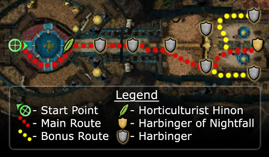

◉ Mission Map

Click to enlarge · Local cache · Wiki
Summary (click to expand)
Jennur's Horde is a mission which represents a branch in the Nightfall storyline. Either this mission or Nundu Bay needs to be completed to progress the storyline.
Region: Vabbi · Mission: 12a of 20 · Type: Cooperative
Required hero: Koss
Path: Garden path
✓ Objectives
Defeat the Harbinger of Nightfall before it summons enough demons to destroy Seborhin.
- Protect the Spirits of Seborhin from the onslaught of torment demons.
- The Light of Seborhin is the only thing that can harm the Harbingers. Drop the Light of Seborhin when you are close enough to an enemy to release its energy.
- Horticulturist Hinon must survive.
- *Bonus* Defeat the additional Harbingers.
- You have defeated [0...2] of 2 additional Harbingers.
→ Walkthrough
The goal of this mission is to stop the corruption of the entire Garden by defeating the Harbinger of Nightfall.
There are regular Harbingers and also two types of Margonite groups; stationary groups and groups that spawn every two minutes and patrol towards Horticulturist Hinon - who must survive. The patrol will either go north or south around the large trench in the floor, but they always start in the same place. Any character with a speed boost should be able to lure the patrol back to the party before they run to Hinon.
At the start, Horticulturist Hinon will create a Light of Seborhin (bundle) which is the only tool that can harm the Harbingers and the final boss, the Harbinger of Nightfall. Dropping a Light of Seborhin beside a Harbinger will kill it (granting a morale boost) - and then the Harbinger will be replaced by a Spirit of Seborhin, which will create another Light of Seborhin. Try and keep these Spirits alive since they shorten the distance the player has to run to fetch a Light of Seborhin. (Note that although the Lights of Seborhin are destroyed when they kill a Harbinger, if they are dropped in the wrong place they can be picked up again.)
The easiest tactic to avoid the threat of being overwhelmed by the patrol is to alternate between killing a stationary group and a patrol group of Margonites.
To make things easier for you, only eliminate the Harbinger located at the top of the stairs, so the groups of Margonites that appear every two minutes will be limited to 4 members. To do this, quickly tag your group where this Harbinger is located, and thus avoid the two located in your path.
Repeat this same pattern (i.e. Patrol → Stationary → Patrol → Stationary, etc.) until you reach the Harbinger of Nightfall. This end boss will only die after three Lights of Seborhin have been dropped on it. Either have the three needed ready somewhere nearby before engaging, or have three players carry each of them.
★ Bonus
The bonus consists of killing the two additional Harbingers and their Margonite company located at the top of the north and south stairs. Ideally, lure some of the foes down the stairs towards where the patrol will cross - so that you can catch the patrol before they escape your party - walking next to the edge of the staircase and then away, is usually enough to pull the Margonites down the stairs. Note that killing only the Harbinger is not enough, and you must kill the entire group of Margonites near the Harbinger to get credit.
◆ Hard Mode
No dedicated Hard Mode section on the wiki — expect tougher foes and adjusted mechanics. See walkthrough notes.
☠ Bosses & Elites
See wiki for boss list (or none listed).
✦ Tips & Notes
Skill recommendations
- Lightbringer skills and Lightbringer title active.
- A speed boost to intercept the patrols and transport Lights of Seborhin.
- A minion master to provide a meat shield and prevent Margonite Warlocks creating wells.
- Martial professions should focus on bursting down Margonite Clerics who use Spell Breaker.
- Abilities that blind such as Blinding Surge and or Ineptitude can be helpful against the melee Margonite Reapers and Executioners.
- Interrupts are important to bring, not just for Margonite Clerics, Sorcerers and Warlocks, but also to interrupt the Margonite monster skill Abaddon's Chosen which will lengthen a fight drastically.
- Martial professions should bring unblockable skills or Asuran Scan as Margonite Clerics use Aegis.
Notes
Patrol group composition
The types of Margonites found in the patrol group depends on how many Harbingers have been killed. However, the composition of the teams does not affect the above strategy.
Harbingers Killed 


0-1 

2-3
4-5
- The Margonite patrols do not drop loot or give experience, possibly to prevent farming exploitation.
- After completing this mission, your party will be taken to The Kodash Bazaar.
- Completion of this mission will fill in page #11 in the Night Falls storybook.